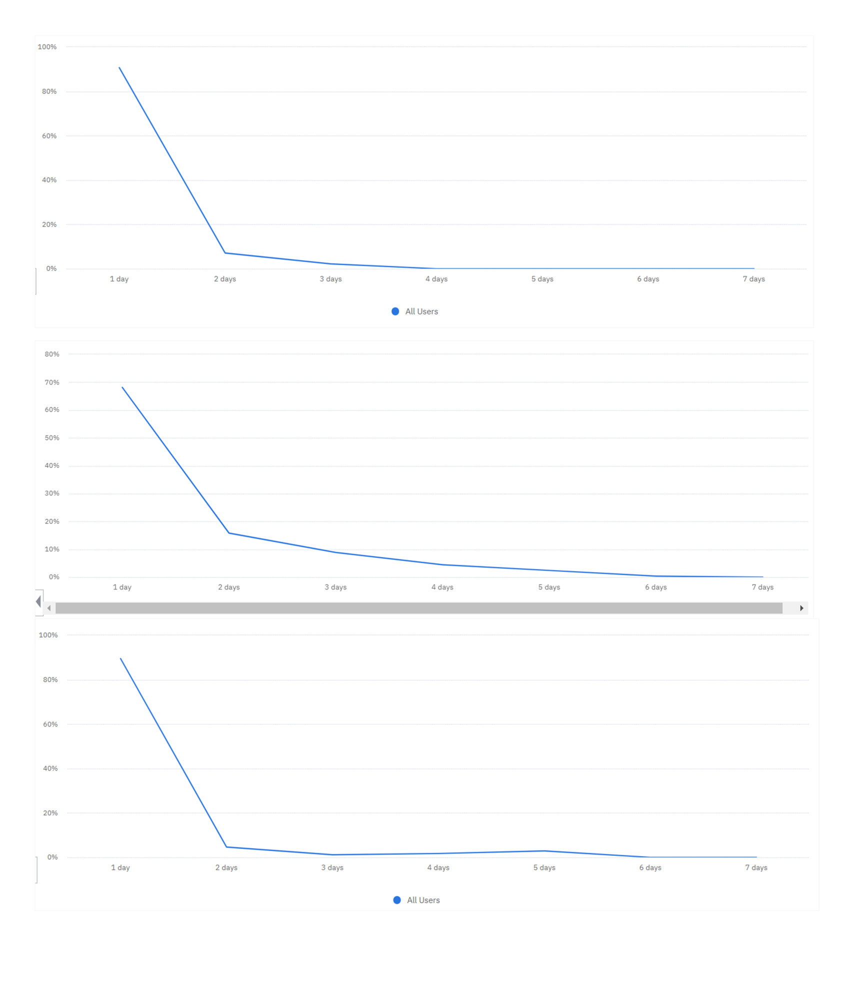

Product metrics and user journeys analysis for admin access portal monitoring
This analysis is part of my work to obtain the title of specialist in Data Science and Analytics - 2022, by USP / Esalq.
By understanding the company's need to monitor access data in the administrator's portal, this present work aims to define which product metrics and type of analysis are adequate to meet this need. The study from the bibliographic review provided a greater foundation to understand the flow of data from its source, the importance of a work framework, and thus the knowledge of how the analysis metrics could be created. Through data from a non-productive environment, a model of chart types was defined so that when the tool is in a productive environment there will already be a consolidated dashboard strategy. At the end of this work, it is possible to have visibility of user engagement and knowledge of their journeys that enable them to access the portal.
Therefore, for the development of the analysis and development of the dashboard-type material of this course completion work, the customer data analysis platform called Amplitude was used.
On this platform, it was possible to select events and specific properties, and thus generate graphs of different types, according to the selected metrics referring to dates, region, among other factors.
The Amplitude platform offers several types of graphs, and for this work three types of graphs available on the platform were used. Here is a brief explanation of each of them:
• Funnel: Understand the conversion of user steps in the application.
• Segmentation: Indicated for event trigger counting.
• Stickness: Number of days the user performs the event. This highlights the event that attracts the user to return to the application.
1ST ANALYSIS: CONVERSION FUNNEL OF THE MAIN JOURNEYS TO ENTER THE APPLICATION:
2ND ANALYSIS: DATA SEGMENTATION FOR FAILURE REASONS THAT PREVENT SUCCESSFUL CONVERSION:
3RD ANALYSIS: LEVEL OF USER ENGAGEMENT WITH ACCESS FEATURES:

CONCLUSION:
At the end of this study, it was possible to understand how an ideal process of tracing access data of users of the company's application is. As planned, the professionals of the Admin Portal Framework now have greater control over this, considering that the definition of established metrics will meet this demand.
The analysis of the conversion funnel type of the main journeys to enter the application generated the understanding that for the initiation events (or started) as for the registration, login and password forgetting journeys, they can only be investigated (in which there is no interest in actually go on with the journey), but when advanced to the next steps, the user has the goal of actually completing it to success.
Through the analysis of the login journey, a large discrepancy was observed in the number of logins initiated and completed logins. With this result, the engineering team was asked the reason for these values. In response, information was obtained that the login event started had an implementation problem in which the values were duplicated for some access users.
However, in the middle of the path the user can also experience difficulties, of which these difficulties generate failures in the journey and consequently are the points of friction.
For this understanding, data segmentation type analysis was applied for failure reasons that prevent successful conversion. The main failure reasons identified were: invalid verification code, inconsistent credentials, and retry limit reached.
The analysis of the level of user engagement with the access functionalities made it clear that most users leave the application open on their cell phones so they don't have to log in daily, and forgetting passwords is not something that recurs over the years. of the week.
At the end of this study, a dashboard of access metrics can certainly be developed with data in a productive environment, through behavioral data, user engagement and knowledge of their journeys that enable them to access the portal.